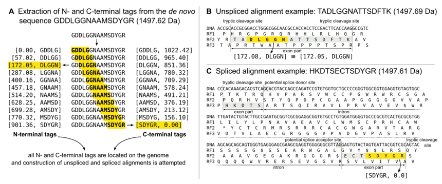

Documentation
Search algorithm
GPF matches peptides derived from de novo sequencing to a genomic DNA sequence in two steps:
- Determine genomic locations of interest for a given peptide.
- Deduce unspliced and spliced alignments at every location of interest.
In the following, both steps are described in detail.
Determine locations of interest
In order to quickly determine all locations in the genome which could potentially explain an observed MS/MS scan, a previously compiled index is queried. The elements in the index file are half mass sequence tags (HMST) which consist of:
- a small sequence of amino acids (typically 3 or 5)
- the mass of either the N-terminal or C-terminal fragment up to the next enzymatic cleavage site
From the query peptide (which is specified by the user), all possible HMST are extracted and queried. All locations of interest (or seeding points) are collected and passed to the next stage: peptide alignment.
Find peptide alignments
From a given location of interest, which always starts at a cleavage site and extends into either the N-terminal or C-terminal direction, an unspliced peptide assembly is attempted first. After that, spliced alignments may be attempted (by default, this only happens when no unspliced alignment has been found), taking splice site dinucleotide consensus sequences into account. In any case, any peptide is reported which has a monoisotopic mass which is equal to the mass of the query peptide within the user-specified mass accuracy (10 ppm by default).
The following image is an attempt to clarify what’s happening:

Note: Subfigure C in the figure above has been corrected because the spliced example in the original figure was pretending to show an alignment on the reverse strand (reading frames 4 to 6), which it was not.
Index file format
GPF index files can be created from genomic DNA FASTA files using the gpfindex tool.
Index data structure
A HMST is defined as a tuple of three elements:
- tag
- direction (0 if forward, 1 if reverse)
- fragment mass
An example for a HMST is [‘LQYSE’, 0, 186.0793], corresponding to something which has ‘LQYSE’ in it and N-terminal fragment (direction = 0) with a mass of 186 Da and which ends at a tryptic cleavage site.
The index can be queried with a given tag/direction pair (in our example, [‘LQYSE’, 0]) and returns a list of occurences in the genomic DNA, sorted by fragment mass. Using the sorted fragment masses, the subset of interest can quickly be determined using binary search, using the HMST’s fragment mass plus/minus the user-defined mass accuracy.
Because leucine (L) and isoleucine (I) are not distinguished in the tags due to their equal masses, the number of possible tag/direction pairs is calculated as follows:
tag/direction pair count = 19 ^ tag size * 2
(all strings of length tag size using 19 different characters (amino acids) plus one extra bit (*2) for the reading direction)
Instead of recording actual amino acid sequences in the tags, all possible sequences are simply enumerated, for example GGGGG would correspond to 0, GGGGA would correspond to 1. All amino acids are sorted by their monoisotopic mass, and isoleucine is skipped, resulting in a numeric range from 0 to 18 for the amino acids glycine to tryptophan.
Chunks
A GPF index file consists of a sequence of chunks, in the following order:
Identifier chunk
| Item | Size | Value / Comment |
|---|---|---|
| magic number | 8 | ‘gpfindex’ |
| index version major | 2 | 3 |
| index version minor | 2 | 0 |
Note: As of now, only version 3.0 is supported.
Info chunk
| Item | Size | Value / Comment |
|---|---|---|
| chunk type | 4 | ‘100’ |
| chunk length | 8 | length of this chunk, in bytes, starting from next byte |
| title length | 4 | the number of characters in the following title |
| title | n | the genome title, gets deduced from the input filename by default |
| offset bits | 4 | the number of bits required to encode any offset in the genomic DNA, including an extra bit for the strand |
| mass bits | 4 | user-defined value denoting the number of bits to used for storing masses using fixed-point arithmetic, 27 by default |
| mass precision | 4 | masses are multiplied by this factor before trunaction to integers, 10,000 by default, corresponding to 4 decimal places |
| tag size | 4 | tag length, in amino acids, 5 by default |
| scaffold count | 4 | number of scaffolds |
| for every scaffold: | ||
| scaffold size | 8 | the scaffold size, in nucleotides |
| scaffold label length | 4 | the number of characters in the following scaffold label |
| scaffold label | n | the scaffold label |
Genetic code chunk (optional)
| Item | Size | Value / Comment |
|---|---|---|
| chunk type | 4 | ‘103’ |
| chunk length | 8 | length of this chunk, in bytes, starting from next byte |
| genetic code | 4 | NCBI genetic code number |
Note: The genetic code chunk is only present if the genetic code used is not 1.
Enzyme chunk (optional)
| Item | Size | Value / Comment |
|---|---|---|
| chunk type | 4 | ‘104’ |
| chunk length | 8 | length of this chunk, in bytes, starting from next byte |
| enzyme length | 4 | the number of characters in the following enzyme description |
| enzyme | n | the enzyme description |
Note: The enzyme chunk is only present if the enzyme used is not ‘RK|’.
DNA chunk
| Item | Size | Value / Comment |
|---|---|---|
| chunk type | 4 | ‘101’ |
| chunk length | 8 | length of this chunk, in bytes, starting from next byte |
| sequence | n | packed DNA sequence (3 bits per nucleotide) |
Note: Nucleotides are encoded using 3 bits, with values of 0 to 3 corresponding to the bases A, C, G, and T. Values higher than 3 represent unknown residues (N).
Index chunk
| Item | Size | Value / Comment |
|---|---|---|
| chunk type | 4 | ‘102’ |
| chunk length | 8 | length of this chunk, in bytes, starting from next byte |
| HMST count bits | 4 | number of bits required to encode the maximum HMST bucket size |
| HMST counts | n | packed HMST counts ((19 ^ tag size) * 2 entries, each of length HMST count bits) the size of this structure is: floor((19 ^ tag size) * 2 * (HMST count bits) / 8) + 1 |
| for every tag/direction pair: | ||
| packed masses | n | masses are sorted and encoded using mass bits bits |
| packed offsets | n | offsets are encoded using offset bits bits |